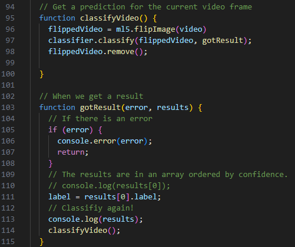
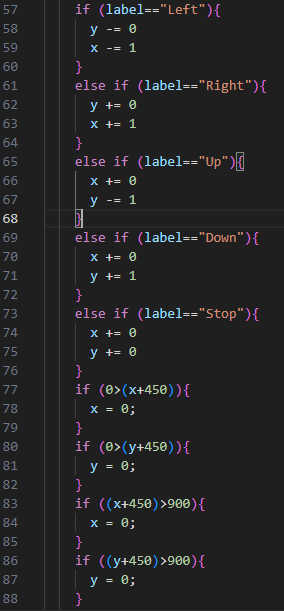

Machine Learning
Kort introduktion
Arbejde med brug af machinelearning med projekt i forhold til selvkørende biler
Teoretiske overvejelser
Den helt store forskel findes i at kunstig intelligens kan tænke selv og kan træne sige selv til at kunne mere mens at sekventiel programmering er et stykke software som er trænet til at udføre en bestemt opgave og ikke kan træne sig selv til at kunne noget andet
Kunstig intelligens har potentialle til at udføre en masse opgaver. Man kan allerede i dag se at kunstig intelligens bruges i sundhedsvæsent til mere effektivt at kunne finde for eksempel knoglebrud og kræftknuder
Brug af teoretiske overvejelser
Kodeeksempler
 Elev

Jeg hedder Viktor E. og går i 2022j